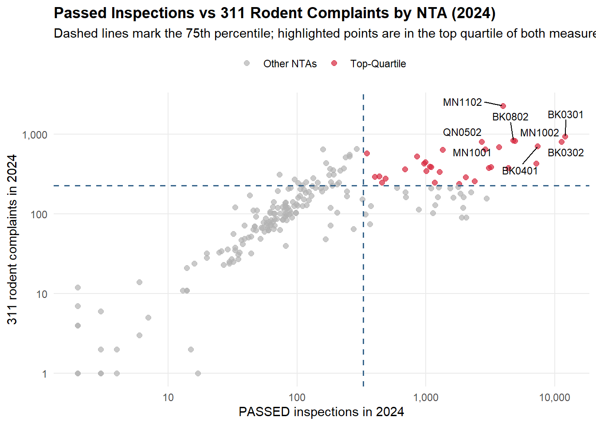
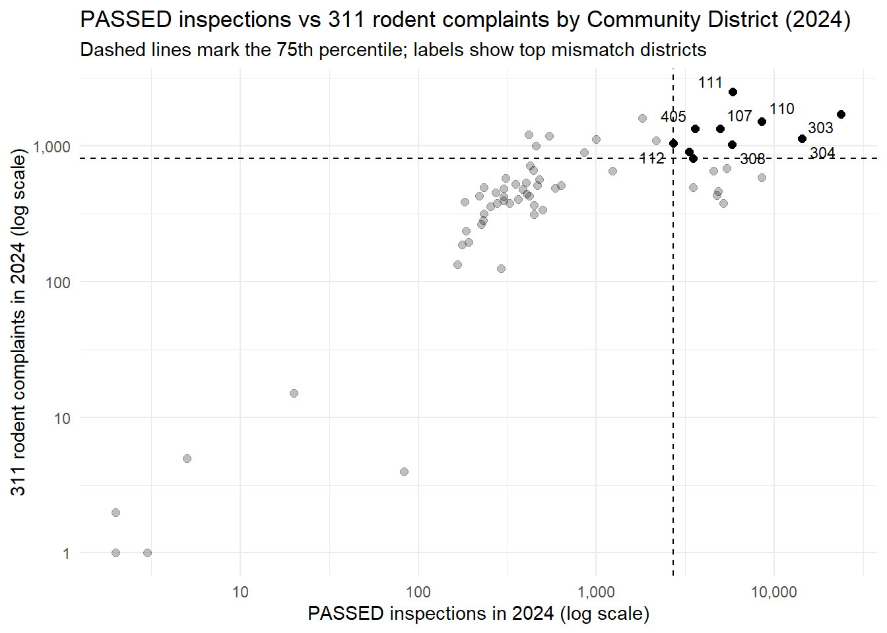

Identifying Bias in Spatial Scale Using Statistical Analysis
Author
Sojung Chu
Published
December 18, 2025
Master Splinter
Introduction
This report is my individual component of a group final course project with Shreya, Rachel, Geraldine, David, and Wing. Initially, we wanted to solve the case of the pesky rats that rule over New York City (NYC) by finding a correlation between the 311 rodent complaints, which are often used as markers for where the rats are located, and other factors. While much of the existing research focuses on identifying the factors that lead to rat infestations, our study instead examined whether 311 rodent complaints are an accurate proxy for rat prevalence. We investigated whether reliance on 311 data introduces bias.
Specific Research Question: Does spatial aggregation cause 311 rodent calls to reflect reporting behavior rather than rat activity?
My analysis addresses whether spatial aggregation causes rodent complaints to reflect reporting behavior rather than rat activity. In 2017, NYC began designating Rat Mitigation Zones, with one criterion being the number of rat-related 311 complaints at the community district level. A difference-in-differences approach was used to compare 311 rodent complaints before and after a rodent inspection, with a passed inspection treated as the event at time zero. With inferring that a passed inspection signals acceptable rat conditions, we expect complaints to decline within the spatial unit after a passed inspection, provided the unit accurately captures rodent activity. This expectation was evaluated at three spatial scales: a local 150‑meter radius, Neighborhood Tabulation Areas (NTA) to maintain consistency with my groupmate’s analysis, and Community Districts to align with how NYC aggregates 311 rat complaints.
The technical details of the analysis, including data acquisition, data cleaning, exploratory data analysis, and model estimation, are documented in this report. Reproducible code and detailed explanations illustrating how difference-in-differences models were developed and evaluated using NYC data are also included. All analyses were conducted in R through associated packages.
Methodology
The following methods were used to obtain and reconstruction four datasets to prepare for analysis.
Data Acquisition
Data was downloaded responsibly through functions that only download the required data if it does not already exist. Before this, the process starts by loading necessary packages through a helper function that installs and loads R packages used throughout this report.
Code
#' Install and load an R package if it is not already available.#'#' @param pkg A character string specifying the name of the package to load.#' @return Invisibly returns TRUE if the package is successfully loaded.#' @examples#' load_package("tidyr")load_package <-function(pkg) {if (!requireNamespace(pkg, quietly =TRUE)) {install.packages(pkg) }suppressPackageStartupMessages(library(pkg, character.only =TRUE))}PACKAGES <-c("httr2", "jsonlite", "dplyr", "sf", "purrr", "tidyr","lubridate", "readr", "tidyverse", "nngeo", "ggplot2", "fixest", "nngeo", "scales","knitr", "ggrepel", "kableExtra", "shiny", "leaflet", "data.table", "modelsummary")lapply(PACKAGES, load_package)
The NYC Rat Inspection dataset contains records of rodent inspections conducted across the five boroughs in response to public complaints and routine monitoring. This dataset is compiled and published by the New York City Department of Health and Mental Hygiene (DOHMH) and is publicly available through NYC Open Data. The dataset contains approximately 2.9 million records, with a small number of inspections dated between 1918 and 1971 and two records from 2000, but these early outliers were removed. The majority of observations begin on January 1, 2001, and extend through December 8, 2025. Each record represents an individual inspection and includes information such as the inspection date, inspection outcome, and location details. Some records list inspection dates in 2045. These future-dated entries were identified as data errors and were removed.
Code
#' Download and cache NYC rat inspection records from NYC Open Data.#'#' This chunk defines a helper function that retrieves rat inspection records from the#' NYC Open Data API and stores a local cached copy for reuse in future runs. Because#' the dataset can exceed single-request limits, the function downloads the data in#' paginated batches using `$limit` and `$offset`, combines the batches into a single#' table, and saves the result as a CSV in the project data directory. If a cached file#' already exists and `refresh = FALSE`, the function reads the local CSV instead of#' re-downloading the data.#'#' @return A tibble containing the full set of rat inspection records returned by the#' NYC Open Data endpoint.#' @examples#' rat_inspection <- load_rat_inspection()# Ensure a local directory exists for storing cached API downloads.# Caching downloaded files allows the analysis to be rerun without# repeatedly querying the NYC Open Data API.if (!dir.exists("data/final")) {dir.create("data/final", showWarnings =FALSE, recursive =TRUE)}load_rat_inspection <-function(refresh =FALSE) {# Define a local cache path so the dataset can be reused across runs.# Caching avoids repeated API calls and makes the workflow reproducible. target_dir <-"data/final" f_name <-"rat_inspection.csv" file_path <-file.path(target_dir, f_name)# Create the cache directory if it does not already exist.if (!dir.exists(target_dir)) {dir.create(target_dir, recursive =TRUE) }# If no cached file is available, or if a refresh is requested, download the data.# Otherwise, read the previously saved file from disk.if (!file.exists(file_path) || refresh) {message("Downloading full rat inspection dataset from NYC Open Data...")# Specify the NYC Open Data endpoint used to retrieve the inspection records. base_url <-"https://data.cityofnewyork.us/resource/p937-wjvj.json"# The Socrata API limits the number of rows returned per request, so the full# dataset is retrieved in repeated chunks using limit and offset parameters. chunk_limit <-50000L all_chunks <-list() offset <-0L chunk_id <-1Lrepeat {message("Requesting rows with offset = ", offset, " ...") resp <-request(base_url) |>req_url_query("$limit"= chunk_limit,"$offset"= offset ) |>req_perform()# Stop execution if the API request fails.resp_check_status(resp)# Parse the response into a tabular object that can be combined across chunks.# Flattening is used to bring nested fields into regular columns when present. raw_json <-resp_body_string(resp) dat_list <-fromJSON(raw_json, flatten =TRUE) chunk_tbl <- dat_list |>as_tibble() n_chunk <-nrow(chunk_tbl)message("Retrieved ", n_chunk, " rows in chunk ", chunk_id, ".")# A zero-row response indicates the end of the export.if (n_chunk ==0) {message("No more rows returned. Reached end of dataset.")break } all_chunks[[chunk_id]] <- chunk_tbl# If the chunk is smaller than the request limit, assume this is the final page.if (n_chunk < chunk_limit) {message("Final chunk returned fewer than ", chunk_limit, " rows.")break }# Otherwise, advance the offset and request the next batch. offset <- offset + n_chunk chunk_id <- chunk_id +1L }# Combine all retrieved chunks into a single table. rat_inspection <-bind_rows(all_chunks)message("Total rows downloaded: ", nrow(rat_inspection))# Save the assembled dataset so it can load it from disk.write_csv(rat_inspection, file_path) } else {message("Reading existing rat inspection data from CSV...") rat_inspection <-read_csv(file_path, show_col_types =FALSE) } rat_inspection}rat_inspection <-load_rat_inspection()# Filter out inspection records with implausible dates that likely reflect data issues.# This removes a small number of records dated 1918–1971, the two records from 2000,# and outliers dated in 2045.rat_inspection <- rat_inspection |>mutate(inspection_date =as_date(inspection_date)) |>filter(!is.na(inspection_date)) |>filter(year(inspection_date) >=1972,year(inspection_date) <=2024) |>filter(year(inspection_date) !=2000)
311 Rodent Complaints
The New York City 311 Rodent Complaints data set contains records of non-emergency service requests submitted by residents reporting rodent sightings and related issues. This data set is compiled and made publicly available through the NYC Open Data portal and includes complaints submitted to the NYC 311 service system. The data set contains approximately 492,000 records and spans from January 2010 through December 2025. Each record represents an individual complaint and includes information such as the date the complaint was submitted, complaint type, location details, and additional service request attributes. The 311 Rodent Complaints data set provides a comprehensive view of public reporting of rodent activity across New York City and is particularly valuable for researchers and urban planners studying urban wildlife interactions, public health concerns, and neighborhood-level patterns in rodent reporting behavior.
Code
#' Download and assemble NYC 311 rodent complaint records from NYC Open Data.#'#' This chunk prepares a local data directory and defines a helper function that#' retrieves NYC 311 rodent complaint data from the NYC Open Data API. Because the#' dataset can exceed single-request limits, the function downloads the data in#' paginated batches using `$limit` and `$offset`. Each batch is cached locally as#' a GeoJSON file to avoid repeated downloads and to make the workflow reproducible.#' The cached batches are then read with `st_read()` and combined into a single dataset.#'#' @return An `sf` object containing the full set of rodent complaint records returned#' by the NYC Open Data endpoint.#' @examples#' rodent_complaints <- get_rodent_complaints()# Define a helper function to download and assemble NYC 311 rodent complaint data.# The function retrieves the data in batches to accommodate API request limits,# caches each batch locally as a GeoJSON file, and combines all batches into# a single sf object for downstream analysis.get_rodent_complaints <-function() {# Define the NYC Open Data API endpoint for 311 rodent complaints.# The data are served as GeoJSON and must be retrieved in multiple requests. ENDPOINT <-"https://data.cityofnewyork.us/resource/cvf2-zn8s.geojson" BATCH_SIZE <-50000 OFFSET <-0 END_OF_EXPORT <-FALSE FILE_INDEX <-1 ALL_DATA <-list()# Continue requesting data until the API returns fewer rows than the batch size,# which signals that the end of the dataset has been reached.while (!END_OF_EXPORT) {# Construct a stable filename for the current batch so that it can be reused# across multiple runs of the analysis. file_name <-sprintf("rodent_311_%04d.geojson", FILE_INDEX) file_path <-file.path("data/final", file_name)# Download the current batch only if it has not already been saved locally.# This avoids unnecessary API calls and improves reproducibility.if (!file.exists(file_path)) { req <-request(ENDPOINT) |>req_url_query(`$limit`= BATCH_SIZE,`$offset`= OFFSET ) resp <-req_perform(req)resp_check_status(resp)resp_body_raw(resp) |>writeBin(con = file_path) }# Read the cached GeoJSON batch into an sf object. batch_data <-st_read(file_path, quiet =TRUE)# Append the current batch to the list of all downloaded data. ALL_DATA <-c(ALL_DATA, list(batch_data))# If the number of returned rows is smaller than the requested batch size,# the final page has been reached and the loop can terminate.if (NROW(batch_data) != BATCH_SIZE) { END_OF_EXPORT <-TRUE } else { OFFSET <- OFFSET + BATCH_SIZE FILE_INDEX <- FILE_INDEX +1 } }# Combine all downloaded batches into a single sf object. ALL_DATA <-bind_rows(ALL_DATA)return(ALL_DATA)}# Execute the data download and combination step and store the result.rodent_complaints <-get_rodent_complaints()
Neighborhood Tabulation Areas (NTA)
The 2020 New York City Neighborhood Tabulation Area (NTA) boundary polygons were downloaded from an ArcGIS REST service provided by the City of New York. These polygons define standardized neighborhood units commonly used for demographic and public health analyses. The boundary file was cached locally to ensure reproducibility and loaded as a spatial object, then transformed to the EPSG:4326 coordinate reference system to align with the rodent inspection and 311 complaint data. A lookup table mapping NTA names to their official NTA codes was also created to facilitate consistent joins across datasets.
Code
#' Download and load NYC Neighborhood Tabulation Area (NTA) boundary polygons.#'#' This function downloads the 2020 Neighborhood Tabulation Area boundary polygons from an#' ArcGIS REST endpoint and caches the GeoJSON locally for reuse. If the file already exists#' locally, it is read from disk instead of being downloaded again.#' The boundaries are loaded as an `sf` object and transformed to EPSG:4326 to align with#' the coordinate reference system used by the rodent datasets.#'#' @param nta_url URL of the ArcGIS GeoJSON endpoint (default provided).#' @param nta_path Local filepath used to cache the downloaded GeoJSON.#' @return An `sf` object containing NYC Neighborhood Tabulation Area polygon geometries#' and associated attributes.#' @importFrom httr2 request req_perform resp_check_status resp_body_raw#' @importFrom sf st_read st_transform#' @exportload_nta_boundaries <-function(nta_url ="https://services5.arcgis.com/GfwWNkhOj9bNBqoJ/arcgis/rest/services/NYC_Neighborhood_Tabulation_Areas_2020/FeatureServer/0/query?where=1=1&outFields=*&outSR=4326&f=pgeojson",nta_path ="data/final/nta_2020.geojson",refresh =FALSE) {# Ensure the output directory exists before attempting to write cached files. out_dir <-dirname(nta_path)if (!dir.exists(out_dir)) {dir.create(out_dir, recursive =TRUE) }# Download the file only if it is not already cached locally.# This keeps the workflow reproducible and avoids repeated requests to the server.if (!file.exists(nta_path)) { resp <-request(nta_url) |>req_perform()resp_check_status(resp)resp_body_raw(resp) |>writeBin(con = nta_path) }# Read the cached NTA boundaries as an sf object and standardize the CRS.# Using a consistent CRS ensures spatial joins and distance calculations work as expected. nta <-st_read(nta_path, quiet =TRUE) |>st_transform(4326)return(nta)}nta <-load_nta_boundaries()
Community Districts
The New York City Community District boundary polygons were downloaded from the NYC Department of City Planning’s dataset, using an ArcGIS REST endpoint that provides the boundaries in GeoJSON format. The boundary file was cached locally to support reproducible analyses and to avoid repeated requests to the hosting server. The polygons were then loaded as an sf object and transformed to EPSG:4326 to ensure compatibility with the coordinate reference system used by the rodent inspection and 311 complaint datasets. For spatial joins, the Community District identifier was retained along with the district geometries.
Code
#' Download and load NYC Community District boundary polygons.#'#' This function downloads NYC Department of City Planning Community District boundaries#' from an ArcGIS REST endpoint and caches the GeoJSON locally for reuse. If the file#' already exists locally, it is read from disk instead of being downloaded again. #' The boundaries are loaded as an `sf` object and transformed to to ensure compatibility#' with other datasets used in the analysis.#'#' @param cd_url URL of the ArcGIS GeoJSON endpoint (default provided).#' @param cd_path Local filepath used to cache the downloaded GeoJSON#' (default "data/final/community_districts.geojson").#' @return An `sf` object containing Community District polygons. The returned object#' includes the Community District identifier (`BoroCD`) and geometry.#' @importFrom httr2 request req_perform resp_check_status resp_body_raw#' @importFrom sf st_read st_transform#' @importFrom dplyr select#' @exportload_cd_shapefiles <-function(cd_url ="https://services5.arcgis.com/GfwWNkhOj9bNBqoJ/arcgis/rest/services/NYC_Community_Districts/FeatureServer/0/query?where=1=1&outFields=*&outSR=4326&f=pgeojson",cd_path ="data/final/community_districts.geojson",refresh =FALSE) {# Ensure the output directory exists before attempting to write cached files. out_dir <-dirname(cd_path)if (!dir.exists(out_dir)) {dir.create(out_dir, recursive =TRUE) }# Download the GeoJSON only when needed to minimize repeated server requests.if (refresh ||!file.exists(cd_path)) { resp <-request(cd_url) |>req_perform()resp_check_status(resp)resp_body_raw(resp) |>writeBin(con = cd_path) }# Read the cached GeoJSON and standardize to EPSG:4326 for spatial compatibility. cd <-st_read(cd_path, quiet =TRUE) |>st_transform(4326)# Keep only the Community District identifier and geometry used for joins. cd <- cd |>select(BoroCD, geometry)return(cd)}cd_keep <-load_cd_shapefiles()
Data Integration
Since the rodent inspection and 311 complaint data are recorded at the point level using latitude and longitude coordinates, I standardized the geographic unit of analysis across the 311 rodent complaint and rodent inspection datasets. Point locations were converted to spatial features and spatially joined to 2020 NTA boundary polygons using a point-in-polygon approach, assigning each record to an NTA.
Code
# Convert rodent complaint coordinates into sf point features.# Extract longitude and latitude as numeric values and remove records without valid coordinates.rat_coords <- rodent_complaints |>mutate(lon =as.numeric(longitude),lat =as.numeric(latitude) ) |>drop_na(lon, lat)# Convert the complaint records into an sf object so spatial operations can be applied.rats_sf <-st_as_sf( rat_coords,coords =c("lon", "lat"),crs =4326)# Load the NTA polygon boundaries and make sure they are in the same CRS as the complaint points.nta <-st_read("data/final/nta_2020.geojson") |>st_transform(4326)
Reading layer `nta_2020' from data source
`C:\Users\sojun\Documents\STA9750-2025-FALL\data\final\nta_2020.geojson'
using driver `GeoJSON'
Simple feature collection with 262 features and 12 fields
Geometry type: POLYGON
Dimension: XY
Bounding box: xmin: -74.25559 ymin: 40.49614 xmax: -73.70001 ymax: 40.91554
Geodetic CRS: WGS 84
Code
# Create a lookup table mapping NTA names to official NTA codes for later joins.nta_lookup <- nta |>st_drop_geometry() |>select(nta = NTAName, nta_code = NTA2020 ) |>distinct()# Spatial join NTA attributes onto each complaint point.rat311_with_nta <-st_join( rats_sf, nta[, c("NTA2020", "NTAName", "BoroName")])# Drop geometry to work with a regular tabular data frame while keeping the NTA attributes.rat311_with_nta_df <- rat311_with_nta |>st_drop_geometry()
Community district polygons were then joined in a similar way.
Code
# Spatial join: assign each 311 rat point to a Community District (BoroCD)rat311_with_cd <-st_join(rats_sf, cd_keep)# Drop geometry for a regular tibblerat311_with_cd_df <- rat311_with_cd |>st_drop_geometry()# Drop geometry for a regular tabular data framerat311_with_cd_df <- rat311_with_cd |>st_drop_geometry()# Add Community District (BoroCD) to any NYC dataset with lon/lat columns# Keeps pipeline modular: load raw data first, enrich later, without modifying originals.add_cd_to_points <-function(df,lon_col ="longitude",lat_col ="latitude",cd_path ="data/final/community_districts.geojson") {# Read/prepare Community District polygons (lightweight) cd_keep <-st_read(cd_path, quiet =TRUE) |>st_transform(4326) |>select(BoroCD, geometry)# Extract coords + drop missing df_coords <- df |>mutate(lon =as.numeric(.data[[lon_col]]),lat =as.numeric(.data[[lat_col]]) ) |>drop_na(lon, lat)# Convert to sf points df_sf <-st_as_sf(df_coords, coords =c("lon", "lat"), crs =4326)# Spatial join + return as regular tibble (no geometry column)st_join(df_sf, cd_keep, left =TRUE) |>st_drop_geometry()}rat_inspection_with_cd_df <-add_cd_to_points(rat_inspection)rat311_with_cd_df <-add_cd_to_points(rodent_complaints)
Data Construction
In order to implement a event-centered difference-in-differences design, balanced panels were constructed around the timing of passed rodent inspections. For each spatial scale, inspection events were treated as the focal intervention, and 311 rodent complaints were organized relative to the first passed inspection within a given geographic unit. All panels were constructed at a weekly resolution and include both pre- and post-inspection periods, with zero-complaint weeks explicitly retained to support count-based modeling.
150 Meter Radius
A distance-based neighborhood radius was constructed around each passed inspection to capture localized responses in 311 complaints. This approach avoids reliance on predefined administrative boundaries. A 150-meter radius was selected to reflect a spatial range over which an inspection could influence nearby complaint behavior while minimizing spillovers from unrelated areas. Each complaint was linked to its nearest passed inspection within this radius, creating inspection-centered neighborhoods that remain fixed over time. Complaint counts were then aggregated weekly, and a balanced panel was constructed around the inspection event. This design prioritizes spatial precision and provides the clearest test of whether 311 complaints respond to localized improvements in rodent conditions.
Code
#' Construct distance-based difference-in-differences panels around PASS inspections.#'#' To support the distance-based difference-in-differences analysis, this chunk integrates#' 311 rodent complaint records with PASS inspection locations using a spatial proximity#' approach. Both datasets are converted to spatial point features and projected to a#' coordinate reference system that preserves distances in meters. This allows complaint#' activity to be measured within a fixed radius of each inspection site and enables#' spatial proximity to be incorporated directly into the DiD design.#'#' The resulting data structure supports neighborhood-by-month panels with zero-call#' months included and is used to estimate Poisson DiD models with neighborhood and#' month fixed effects.# Specify the radius, in meters, used to define complaints occurring near a PASS inspection.# This value determines the spatial scale at which inspection effects are evaluated.# -----------------------------# WEEK VERSION (separate names) + recommended filters# -----------------------------radius_m_w <-150window_w_w <-26week_start_w <-1# 1 = Monday, 7 = Sunday# 1) 311 calls -> sf points with weekcalls_sf_w <- rat311_with_nta_df %>%filter(!is.na(longitude), !is.na(latitude)) %>%mutate(created_date_w =as.Date(created_date),call_week_w =floor_date(created_date_w, "week", week_start = week_start_w) ) %>%st_as_sf(coords =c("longitude", "latitude"), crs =4326) %>%st_transform(3857)# 2) Inspections -> sf points with week (PASS centers)insp_sf_w <- rat_inspection %>%filter(!is.na(longitude), !is.na(latitude)) %>%mutate(inspection_date_w =ymd(inspection_date),inspection_week_w =floor_date(inspection_date_w, "week", week_start = week_start_w) ) %>%st_as_sf(coords =c("longitude", "latitude"), crs =4326) %>%st_transform(3857)pass_sf_w <- insp_sf_w %>%filter(result =="Passed") %>%arrange(inspection_week_w) %>%mutate(neigh_id_w =row_number(),first_pass_week_w = inspection_week_w )# 3) Nearest PASS for each call within radiusnn_out_w <-st_nn( calls_sf_w, pass_sf_w,k =1, maxdist = radius_m_w,returnDist =TRUE,progress =FALSE)calls_sf_w <- calls_sf_w %>%mutate(pass_row_w =map_int(nn_out_w$nn, ~if (length(.x) ==0) NA_integer_else .x[1]),dist_to_pass_m_w =map_dbl(nn_out_w$dist, ~if (length(.x) ==0) NA_real_else .x[1]),neigh_id_w =if_else(is.na(pass_row_w), NA_integer_, pass_sf_w$neigh_id_w[pass_row_w]) ) %>%select(-pass_row_w)# 4) Keep only calls within chosen radius of a PASScalls_near_w <- calls_sf_w %>%filter(!is.na(dist_to_pass_m_w) & dist_to_pass_m_w <= radius_m_w)# 5) Aggregate to neighborhood × week: count callscalls_neigh_week_w <- calls_near_w %>%st_drop_geometry() %>%group_by(neigh_id_w, call_week_w) %>%summarise(calls_w =n(), .groups ="drop")# PASS event info per neigh_id_wpass_info_w <- pass_sf_w %>%st_drop_geometry() %>%select(neigh_id_w, first_pass_week_w)# 6) FULL PANEL: all neighborhoods × all weeks (fill zeros) + event-time varsall_weeks_w <-seq(from =min(calls_neigh_week_w$call_week_w, na.rm =TRUE),to =max(calls_neigh_week_w$call_week_w, na.rm =TRUE),by ="week")# Only neighborhoods that actually get used (nearest for >=1 call within radius)all_neigh_w <-sort(unique(calls_near_w$neigh_id_w))full_neigh_panel_w <-expand.grid(neigh_id_w = all_neigh_w,call_week_w = all_weeks_w)panel_neigh_w <- full_neigh_panel_w %>%left_join(calls_neigh_week_w, by =c("neigh_id_w", "call_week_w")) %>%mutate(calls_w =replace_na(calls_w, 0L)) %>%left_join(pass_info_w, by ="neigh_id_w") %>%mutate(rel_week_w =as.integer((call_week_w - first_pass_week_w) /7),post_pass_w =as.integer(rel_week_w >=0) ) %>%filter(rel_week_w >=-window_w_w, rel_week_w <= window_w_w)# 7) Recommended filters (balanced window + drop all-zero centers)panel_neigh_w <- panel_neigh_w %>%group_by(neigh_id_w) %>%mutate(n_pre_w =sum(rel_week_w <0),n_post_w =sum(rel_week_w >=0),total_calls_w =sum(calls_w, na.rm =TRUE) ) %>%ungroup() %>%filter( n_pre_w >=1, n_post_w >=1, total_calls_w >0 ) %>%select(-total_calls_w)
NTA Level
311 rodent complaints and inspection dates were aggregated to weekly counts within each Neighborhood Tabulation Area (NTA), and inspection records were used to identify the first passed rodent inspection in each NTA. The first treatment period is defined to begin in the week following the inspection to avoid conflicting inspection-day reporting with post-inspection behavioral or environmental changes. An event-centered panel was constructed by expanding each NTA across a fixed window of relative weeks around the inspection event and merging in weekly complaint counts.
Code
# Aggregate 311 calls weekly so each NTA has number of calls per weeklibrary(dplyr)library(lubridate)library(tidyr)# 1) Weekly calls by NTA x calendar week (same as you have)calls_weekly <- rat311_with_nta_df %>%mutate(week =floor_date(created_date, "week", week_start =1),area_id = NTA2020 ) %>%filter(!is.na(area_id)) %>%group_by(area_id, week) %>%summarise(calls =n(), .groups ="drop")# 2) First PASS week per NTA (same logic, but keep pass_week + treat_start_week)pass_times <- rat_inspection %>%mutate(area_id = nta_code, pass_date = inspection_date) %>%filter(!is.na(area_id), result =="Passed", !is.na(pass_date)) %>%group_by(area_id) %>%summarise(first_pass_date =min(pass_date),pass_week =floor_date(first_pass_date, "week", week_start =1),treat_start_week = pass_week +weeks(1),.groups ="drop" )# 3) Build event-centered grid: NTA x rel_weekevent_grid <-expand.grid(area_id =unique(pass_times$area_id),rel_week =-8:8)# 4) Map each rel_week to the corresponding calendar week for that NTApanel_event <- event_grid %>%left_join(pass_times, by ="area_id") %>%mutate(week = treat_start_week +weeks(rel_week),post_pass =ifelse(rel_week >=0, 1L, 0L) ) %>%left_join(calls_weekly, by =c("area_id", "week")) %>%mutate(calls =replace_na(calls, 0L))# Optional Sanity checks# nrow(panel)# nlevels(panel$area_factor); nlevels(panel$month_factor)# table(panel$post_pass)
Community District Level
As with the NTA analysis, a symmetric 8-week window before and after the inspection was used. Weekly complaint counts were aligned to event time, to enable direct comparison across spatial scales.
Code
library(dplyr)library(lubridate)library(tidyr)library(fixest)window_w <-8############################################# 1) Weekly calls by CD x calendar week############################################calls_weekly_cd <- rat311_with_cd_df %>%mutate(week_cd =floor_date(created_date, "week", week_start =1),cd_id =as.character(BoroCD) ) %>%filter(!is.na(cd_id), !is.na(week_cd)) %>%group_by(cd_id, week_cd) %>%summarise(calls_cd =n(), .groups ="drop")############################################# 2) First PASS week by CD + treat_start_week############################################pass_times_cd <- rat_inspection_with_cd_df %>%mutate(cd_id =as.character(BoroCD),pass_date = inspection_date ) %>%filter(!is.na(cd_id), result =="Passed", !is.na(pass_date)) %>%group_by(cd_id) %>%summarise(first_pass_date_cd =min(pass_date),pass_week_cd =floor_date(first_pass_date_cd, "week", week_start =1),treat_start_week_cd = pass_week_cd +weeks(1),.groups ="drop" )############################################# 3) Event-centered grid: CD x rel_week############################################event_grid_cd <-expand.grid(cd_id =unique(pass_times_cd$cd_id),rel_week_cd =-window_w:window_w)############################################# 4) Map rel_week -> calendar week, join calls, fill zeros############################################panel_event_cd <- event_grid_cd %>%left_join(pass_times_cd, by ="cd_id") %>%mutate(week_cd = treat_start_week_cd +weeks(rel_week_cd),post_pass_cd =ifelse(rel_week_cd >=0, 1L, 0L) ) %>%left_join(calls_weekly_cd, by =c("cd_id", "week_cd")) %>%mutate(calls_cd =replace_na(calls_cd, 0L))############################################# (Optional) drop CDs with all-zero calls in the window############################################panel_event_cd <- panel_event_cd %>%group_by(cd_id) %>%filter(sum(calls_cd, na.rm =TRUE) >0) %>%ungroup()
Exploratory Data Analysis
NTAs with many PASS inspections in 2024
Among those, which NTAs still had high 311 rat complaint volumes in 2024
# Create table output using kableExtranta_lookup <- nta %>%st_drop_geometry() %>%transmute(area_id = NTA2020,nta_name = NTAName ) %>%distinct()pass_call_2024 %>%left_join(nta_lookup, by ="area_id") %>%slice_max(n_pass_2024, n =6, with_ties =FALSE) %>%transmute(`NTA Code`= area_id,`NTA Name`= nta_name,`Passed inspections (2024)`=comma(n_pass_2024),`311 complaints (2024)`=comma(calls_2024) ) %>%kable(align =c("l", "l", "r", "r"),caption ="Top NTAs by passed inspections and their 311 complaint volume (2024)." ) %>%kable_styling(full_width =FALSE, bootstrap_options =c("striped", "hover"))
Top NTAs by passed inspections and their 311 complaint volume (2024).
NTA Code
NTA Name
Passed inspections (2024)
311 complaints (2024)
BK0301
Bedford-Stuyvesant (West)
11,987
930
BK0302
Bedford-Stuyvesant (East)
11,220
797
BK0401
Bushwick (West)
7,362
706
BK0402
Bushwick (East)
7,140
427
MN1002
Harlem (North)
4,907
826
BK0802
Crown Heights (North)
4,741
834
NTAs in the top percentile of both inspection volume and complaint volume were flagged as areas where intensive inspection activity coincided with high reporting levels. The above table highlights neighborhoods where complaint volume remains elevated despite frequent inspections in 2024, motivating a closer examination of how spatial scale shapes the relationship between inspections and 311 complaints.
Code
# 1) Create flags (including mismatch) ONCEx_cut <-quantile(pass_call_2024$n_pass_2024, 0.75, na.rm =TRUE)y_cut <-quantile(pass_call_2024$calls_2024, 0.75, na.rm =TRUE)df <- pass_call_2024 %>%mutate(high_pass = n_pass_2024 >= x_cut,high_calls = calls_2024 >= y_cut,mismatch = high_pass & high_calls,x = n_pass_2024 +1, # +1 so log scale works with zerosy = calls_2024 +1 )# 2) (Optional) label only the top 8 mismatch NTAs by complaintslabel_df <- df %>%filter(mismatch) %>%slice_max(calls_2024, n =8)# 3) Plotggplot(df, aes(x = x, y = y)) +geom_point(aes(alpha = mismatch), size =2) +geom_vline(xintercept = x_cut +1, linetype ="dashed") +geom_hline(yintercept = y_cut +1, linetype ="dashed") +geom_text_repel(data = label_df,aes(label = area_id),size =3,max.overlaps =Inf ) +scale_x_log10(labels = comma) +scale_y_log10(labels = comma) +scale_alpha_manual(values =c("FALSE"=0.25, "TRUE"=1), guide ="none") +labs(title ="PASSED inspections vs 311 rodent complaints by NTA (2024)",subtitle ="Dashed lines mark the 75th percentile; labels show top mismatch NTAs",x ="PASSED inspections in 2024 (log scale)",y ="311 rodent complaints in 2024 (log scale)" ) +theme_minimal()

These areas are now plotted above. NTAs with high volumes of passed inspections and high 311 complaint volumes are highlighted, showing where inspection activity and resident reporting remain simultaneously elevated.
Code
# 2024 PASSES by CDpasses_cd_2024 <- rat_inspection_with_cd_df %>%mutate(cd_id =as.character(BoroCD),year =year(inspection_date)) %>%filter(year ==2024, result =="Passed", !is.na(cd_id)) %>%group_by(cd_id) %>%summarise(n_pass_2024 =n(), .groups ="drop")# 2024 CALLS by CDcalls_cd_2024 <- rat311_with_cd_df %>%mutate(cd_id =as.character(BoroCD),year =year(created_date)) %>%filter(year ==2024, !is.na(cd_id)) %>%group_by(cd_id) %>%summarise(calls_2024 =n(), .groups ="drop")pass_call_cd_2024 <- passes_cd_2024 %>%left_join(calls_cd_2024, by ="cd_id") %>%mutate(calls_2024 =replace_na(calls_2024, 0L))pass_call_cd_2024 |>slice_max(n_pass_2024, n =6, with_ties =FALSE) |>mutate(n_pass_2024 =comma(n_pass_2024),calls_2024 =comma(calls_2024) ) |>kable(col.names =c("Community District", "Passed Inspections (2024)", "311 Complaints (2024)"),align =c("l", "r", "r"),caption ="Top Community Districts by passed inspections and their 311 complaint volume (2024)." ) |>kable_styling(full_width =FALSE, bootstrap_options =c("striped", "hover"))
Top Community Districts by passed inspections and their 311 complaint volume (2024).
Community District
Passed Inspections (2024)
311 Complaints (2024)
303
23,660
1,708
304
14,257
1,133
110
8,516
1,514
103
8,459
583
111
5,846
2,494
308
5,794
1,025
Code
# Flags + plotx_cut_cd <-quantile(pass_call_cd_2024$n_pass_2024, 0.75, na.rm =TRUE)y_cut_cd <-quantile(pass_call_cd_2024$calls_2024, 0.75, na.rm =TRUE)df_cd <- pass_call_cd_2024 %>%mutate(high_pass = n_pass_2024 >= x_cut_cd,high_calls = calls_2024 >= y_cut_cd,mismatch = high_pass & high_calls,x = n_pass_2024 +1,y = calls_2024 +1 )label_df_cd <- df_cd %>%filter(mismatch) %>%slice_max(calls_2024, n =8)ggplot(df_cd, aes(x = x, y = y)) +geom_point(aes(alpha = mismatch), size =2) +geom_vline(xintercept = x_cut_cd +1, linetype ="dashed") +geom_hline(yintercept = y_cut_cd +1, linetype ="dashed") +geom_text_repel(data = label_df_cd, aes(label = cd_id),size =3, max.overlaps =Inf) +scale_x_log10(labels = comma) +scale_y_log10(labels = comma) +scale_alpha_manual(values =c("FALSE"=0.25, "TRUE"=1), guide ="none") +labs(title ="PASSED inspections vs 311 rodent complaints by Community District (2024)",subtitle ="Dashed lines mark the 75th percentile; labels show top mismatch districts",x ="PASSED inspections in 2024 (log scale)",y ="311 rodent complaints in 2024 (log scale)" ) +theme_minimal()

Statistical Analysis Using Difference-in-Differences
A weekly panel of rat-related 311 complaints by local area was constructed, and the week in which each neighborhood first received a passed inspection (PASS) was identified. An event-centered difference-in-differences design is adopted, in which time is indexed relative to the first passed inspection in each neighborhood. A Poisson regression with neighborhood fixed effects and an indicator for weeks following a passed inspection is estimated using a balanced window of eight weeks before and after the inspection. The Poisson specification is appropriate given the count nature of the outcome and allows for a flexible mean–variance relationship while accommodating a large share of zero-valued observations. This specification compares changes in 311 complaint volume before and after a passed inspection within the same neighborhood, net of time-invariant neighborhood characteristics. Identification relies on the assumption that, absent a passed inspection, complaint trends within neighborhoods would have evolved similarly in the pre- and post-inspection periods.
DiD Model Estimates
All three specifications are estimated using the fixest package to maintain a consistent estimation framework across different spatial scales. In each case, the outcome is a count of rat-related 311 complaints aggregated to the relevant week. Models are estimated with fepois, which fits a fixed-effects Poisson regression via Poisson quasi–maximum likelihood while efficiently absorbing high-dimensional fixed effects. This approach is well suited to complaint counts that are nonnegative and often zero, and it allows unit fixed effects to be included without manually creating large sets of dummy variables. Across specifications, standard errors are clustered at the unit level to account for within-unit serial correlation in complaint activity over time.
150m Radius Model
First, the following code segment shows the model used for the 150 radius spatial scale.
Code
# Fit Poisson DiD model using fixed-effects Poisson using fixest packagem150_w <-fepois( calls_w ~ post_pass_w | neigh_id_w,data = panel_neigh_w,vcov =~ neigh_id_w)etable(m150_w)
NTA Model
Next, the following code segment shows the model used for the NTA level spatial scale.
Code
m <-fepois( calls ~ post_pass | area_id,data = panel_event,vcov =~ area_id # cluster by area)etable(m)
Community District Model
Lastly, the following code segment shows the model used for the Community District level spatial scale.
Before presenting the main estimates, diagnostic checks were considered to assess the plausibility of the identifying assumptions.
Stable Unit Treatment Value Assumption (SUTVA)
Spillovers across neighborhoods are likely to be limited because rat inspections target specific properties and complaint reporting is highly localized. Residents typically report conditions in their immediate vicinity, making it unlikely that a passed inspection in one neighborhood directly affects complaint behavior in non-adjacent areas.
Event-time averages for inspection-centered neighborhoods exhibit a pronounced increase in complaint activity immediately prior to PASS inspections, reflecting the fact that inspections are triggered by accumulated complaints. For this reason, the identifying variation comes from comparing post-inspection outcomes to the immediate pre-inspection period rather than to distant pre-periods. The analysis therefore relies on a local parallel trends assumption, under which complaint levels would have remained at their pre-inspection level absent a PASS result.
Event-time averages exhibit some week-to-week variability in the pre-inspection period, which is expected given low complaint counts and aggregation at the neighborhood level. However, there is no evidence of a systematic downward trend prior to PASS inspections. In addition, placebo timing tests yield null effects, providing no evidence of differential pre-trends.
At the community district level, average complaint activity shows no pronounced pre-inspection pattern and remains close to zero prior to PASS inspections. This reflects the coarse spatial aggregation of community districts, within which localized inspection-related complaint dynamics are largely diluted.
Results
Raw coefficient results are not intuitive because Poisson was used in the model. Instead percentage changes can be reported using the following formula:
\[
\% \Delta = 100 \times \left(\exp(\beta) - 1\right)
\] The table below reports the difference-in-differences estimates of the effect of PASS inspections on rat-related 311 complaints across three spatial scales. At the community district level, the estimated effect is small and statistically indistinguishable from zero, reflecting substantial spatial dilution. Estimates at the NTA level are larger in magnitude but imprecise. In contrast, inspection-centered neighborhoods defined within a 150 m radius exhibit a large and statistically significant decline in complaints following a PASS inspection, consistent with highly localized treatment effects.
Code
# ---- Models to compare ----models <-list("Community District"= m_cd,"NTA"= m,"150 m radius"= m150_w)# ---- Implied percent change for Poisson coefficients: %Δ = 100 * (exp(β) - 1) ----post_betas <-c("Community District"=coef(m_cd)[["post_pass_cd"]],"NTA"=coef(m)[["post_pass"]],"150 m radius"=coef(m150_w)[["post_pass_w"]])pct_change <-100* (exp(post_betas) -1)pct_change_fmt <-sprintf("%.1f%%", pct_change)# Ensure names exist and match the table columns (prevents "subscript out of bounds")pct_change_fmt <-setNames( pct_change_fmt,c("Community District", "NTA", "150 m radius"))add_row <-data.frame(term ="Implied % change (100×(exp(β)−1))","Community District"= pct_change_fmt[["Community District"]],"NTA"= pct_change_fmt[["NTA"]],"150 m radius"= pct_change_fmt[["150 m radius"]],check.names =FALSE)# ---- Results table ----modelsummary( models,statistic ="({std.error})",stars =TRUE,coef_map =c("post_pass_cd"="Post-PASS","post_pass"="Post-PASS","post_pass_w"="Post-PASS" ),add_rows = add_row,output ="html")
Community District
NTA
150 m radius
+ p < 0.1, * p < 0.05, ** p < 0.01, *** p < 0.001
Post-PASS
18.484***
−0.369
−1.135***
(0.000)
(0.419)
(0.017)
Num.Obs.
34
323
3828557
R2
0.202
0.039
0.089
R2 Adj.
0.008
−0.132
−0.050
R2 Within
0.189
0.005
0.032
R2 Within Adj.
0.090
−0.004
0.032
AIC
22.4
254.7
1091186.1
BIC
27.0
330.2
2045509.4
RMSE
0.27
0.38
0.25
Std.Errors
by: cd_id
by: area_id
by: neigh_id_w
FE: cd_id
X
FE: area_id
X
FE: neigh_id_w
X
Implied % change (100×(exp(β)−1))
10652785848.9%
-30.9%
-67.9%
Comparative Point Plot Across Spatial Scales
Code
# Helper: convert log effect + SE into percent change + 95% intervalto_pct_ci <-function(beta, se, z =1.96) { lo <- beta - z * se hi <- beta + z * sec(estimate_pct = (exp(beta) -1) *100,lower_pct = (exp(lo) -1) *100,upper_pct = (exp(hi) -1) *100 )}# 1) Community Districts: m_cd (fixest::fepois), coefficient is post_pass_cdb_cd <-coef(m_cd)[["post_pass_cd"]]se_cd <-se(m_cd)[["post_pass_cd"]]ci_cd <-to_pct_ci(b_cd, se_cd)# 2) 150m: m150_w (fixest::fepois), coefficient is post_pass_wb_150 <-coef(m150_w)[["post_pass_w"]]se_150 <-se(m150_w)[["post_pass_w"]]ci_150 <-to_pct_ci(b_150, se_150)# 3) NTA: model (glm), coefficient is post_passb_nta <-coef(m)[["post_pass"]]se_nta <-coef(m)[["post_pass"]]ci_nta <-to_pct_ci(b_nta, se_nta)# Combine into one table (ready for a comparative point plot)results_all <-data.frame(scale =c("150m radius", "NTA", "Community District"),estimate_pct =c(ci_150["estimate_pct"], ci_nta["estimate_pct"], ci_cd["estimate_pct"]),lower_pct =c(ci_150["lower_pct"], ci_nta["lower_pct"], ci_cd["lower_pct"]),upper_pct =c(ci_150["upper_pct"], ci_nta["upper_pct"], ci_cd["upper_pct"]),row.names =NULL)results_all
Compute “complaint drop” vs “expected drop” per NTA.
actual_drop = how much calls actually fell after PASS
pred_drop = how much the model says they should have fallen
drop_score = pred_drop – actual_drop
Big positive drop_score = “calls didn’t drop as much as expected” → bias signal.
Flag “bias NTAs” High calls before PASS + no drop afterward = bias.
Code
# Thresholds for unusually high pre-PASS calls and unusually high non-response scoreq75_pre <-quantile(drops$actual_pre, 0.75, na.rm =TRUE)q75_drop <-quantile(drops$drop_score, 0.75, na.rm =TRUE)biased_areas <- drops %>%mutate(high_pre = actual_pre >= q75_pre,high_drop = drop_score >= q75_drop,bias_flag = high_pre & high_drop ) %>%arrange(desc(drop_score))biased_areas %>%filter(bias_flag) %>%head()
Conclusion/ Further Steps
Source Code
---title: "When 311 Complaints Stop Measuring NYC Rats"subtitle: "Identifying Bias in Spatial Scale Using Statistical Analysis"author: "Sojung Chu"date: 2025-12-18date-format: "MMMM D, YYYY"format: html: code-tools: true code-fold: true toc: true toc-location: right number-sections: false toc-depth: 3 df-print: paged # runtime: shinyexecute: eval: true echo: true warning: false message: falsebibliography: individual_report.bibcsl: apa.csl---{width=25%}# IntroductionThis report is my individual component of a [group final course project](https://shreyakarki71.github.io/STA9750-2025-FALL/final_project.html) with [Shreya](https://shreyakarki71.github.io/STA9750-2025-FALL/individual_report.html), [Rachel](https://rcutsumpas-cloud.github.io/STA9750-2025-FALL/docs/rats_analysis_demo.html), [Geraldine](https://ghirschhorn.github.io/STA9750-2025-FALL/final.html), [David](https://samsmadge.github.io/STA9750-2025-FALL/individual_report.html), and [Wing](https://git4wing.github.io/STA9750-2025-FALL/Final_individual.html#introduction). Initially, we wanted to solve the case of the pesky rats that rule over New York City (NYC) by finding a correlation between the 311 rodent complaints, which are often used as markers for where the rats are located, and other factors. While much of the existing research focuses on identifying the factors that lead to rat infestations, our study instead examined whether 311 rodent complaints are an accurate proxy for rat prevalence. We investigated whether reliance on 311 data introduces bias.> **Specific Research Question: Does spatial aggregation cause 311 rodent calls to reflect reporting behavior rather than rat activity?**My analysis addresses whether spatial aggregation causes rodent complaints to reflect reporting behavior rather than rat activity. In 2017, NYC began designating [Rat Mitigation Zones](https://codelibrary.amlegal.com/codes/newyorkcity/latest/NYCrules/0-0-0-138869), with one criterion being the number of rat-related 311 complaints at the community district level. A difference-in-differences approach was used to compare 311 rodent complaints before and after a rodent inspection, with a passed inspection treated as the event at time zero. With inferring that a passed inspection signals acceptable rat conditions, we expect complaints to decline within the spatial unit after a passed inspection, provided the unit accurately captures rodent activity. This expectation was evaluated at three spatial scales: a local 150‑meter radius, Neighborhood Tabulation Areas (NTA) to maintain consistency with my groupmate’s analysis, and Community Districts to align with how NYC aggregates 311 rat complaints.The technical details of the analysis, including data acquisition, data cleaning, exploratory data analysis, and model estimation, are documented in this report. Reproducible code and detailed explanations illustrating how difference-in-differences models were developed and evaluated using NYC data are also included. All analyses were conducted in R through associated packages.# MethodologyThe following methods were used to obtain and reconstruction four datasets to prepare for analysis.## Data AcquisitionData was downloaded responsibly through functions that only download the required data if it does not already exist. Before this, the process starts by loading necessary packages through a helper function that installs and loads R packages used throughout this report. ```{r}#' Install and load an R package if it is not already available.#'#' @param pkg A character string specifying the name of the package to load.#' @return Invisibly returns TRUE if the package is successfully loaded.#' @examples#' load_package("tidyr")load_package <-function(pkg) {if (!requireNamespace(pkg, quietly =TRUE)) {install.packages(pkg) }suppressPackageStartupMessages(library(pkg, character.only =TRUE))}PACKAGES <-c("httr2", "jsonlite", "dplyr", "sf", "purrr", "tidyr","lubridate", "readr", "tidyverse", "nngeo", "ggplot2", "fixest", "nngeo", "scales","knitr", "ggrepel", "kableExtra", "shiny", "leaflet", "data.table", "modelsummary")lapply(PACKAGES, load_package)```### Rodent InspectionsThe NYC Rat Inspection dataset contains records of rodent inspections conducted across the five boroughs in response to public complaints and routine monitoring. This dataset is compiled and published by the New York City Department of Health and Mental Hygiene (DOHMH) and is publicly available through [NYC Open Data](https://data.cityofnewyork.us/Health/Rodent-Inspection/p937-wjvj/about_data). The dataset contains approximately 2.9 million records, with a small number of inspections dated between 1918 and 1971 and two records from 2000, but these early outliers were removed. The majority of observations begin on January 1, 2001, and extend through December 8, 2025. Each record represents an individual inspection and includes information such as the inspection date, inspection outcome, and location details. Some records list inspection dates in 2045. These future-dated entries were identified as data errors and were removed. ```{r}#' Download and cache NYC rat inspection records from NYC Open Data.#'#' This chunk defines a helper function that retrieves rat inspection records from the#' NYC Open Data API and stores a local cached copy for reuse in future runs. Because#' the dataset can exceed single-request limits, the function downloads the data in#' paginated batches using `$limit` and `$offset`, combines the batches into a single#' table, and saves the result as a CSV in the project data directory. If a cached file#' already exists and `refresh = FALSE`, the function reads the local CSV instead of#' re-downloading the data.#'#' @return A tibble containing the full set of rat inspection records returned by the#' NYC Open Data endpoint.#' @examples#' rat_inspection <- load_rat_inspection()# Ensure a local directory exists for storing cached API downloads.# Caching downloaded files allows the analysis to be rerun without# repeatedly querying the NYC Open Data API.if (!dir.exists("data/final")) {dir.create("data/final", showWarnings =FALSE, recursive =TRUE)}load_rat_inspection <-function(refresh =FALSE) {# Define a local cache path so the dataset can be reused across runs.# Caching avoids repeated API calls and makes the workflow reproducible. target_dir <-"data/final" f_name <-"rat_inspection.csv" file_path <-file.path(target_dir, f_name)# Create the cache directory if it does not already exist.if (!dir.exists(target_dir)) {dir.create(target_dir, recursive =TRUE) }# If no cached file is available, or if a refresh is requested, download the data.# Otherwise, read the previously saved file from disk.if (!file.exists(file_path) || refresh) {message("Downloading full rat inspection dataset from NYC Open Data...")# Specify the NYC Open Data endpoint used to retrieve the inspection records. base_url <-"https://data.cityofnewyork.us/resource/p937-wjvj.json"# The Socrata API limits the number of rows returned per request, so the full# dataset is retrieved in repeated chunks using limit and offset parameters. chunk_limit <-50000L all_chunks <-list() offset <-0L chunk_id <-1Lrepeat {message("Requesting rows with offset = ", offset, " ...") resp <-request(base_url) |>req_url_query("$limit"= chunk_limit,"$offset"= offset ) |>req_perform()# Stop execution if the API request fails.resp_check_status(resp)# Parse the response into a tabular object that can be combined across chunks.# Flattening is used to bring nested fields into regular columns when present. raw_json <-resp_body_string(resp) dat_list <-fromJSON(raw_json, flatten =TRUE) chunk_tbl <- dat_list |>as_tibble() n_chunk <-nrow(chunk_tbl)message("Retrieved ", n_chunk, " rows in chunk ", chunk_id, ".")# A zero-row response indicates the end of the export.if (n_chunk ==0) {message("No more rows returned. Reached end of dataset.")break } all_chunks[[chunk_id]] <- chunk_tbl# If the chunk is smaller than the request limit, assume this is the final page.if (n_chunk < chunk_limit) {message("Final chunk returned fewer than ", chunk_limit, " rows.")break }# Otherwise, advance the offset and request the next batch. offset <- offset + n_chunk chunk_id <- chunk_id +1L }# Combine all retrieved chunks into a single table. rat_inspection <-bind_rows(all_chunks)message("Total rows downloaded: ", nrow(rat_inspection))# Save the assembled dataset so it can load it from disk.write_csv(rat_inspection, file_path) } else {message("Reading existing rat inspection data from CSV...") rat_inspection <-read_csv(file_path, show_col_types =FALSE) } rat_inspection}rat_inspection <-load_rat_inspection()# Filter out inspection records with implausible dates that likely reflect data issues.# This removes a small number of records dated 1918–1971, the two records from 2000,# and outliers dated in 2045.rat_inspection <- rat_inspection |>mutate(inspection_date =as_date(inspection_date)) |>filter(!is.na(inspection_date)) |>filter(year(inspection_date) >=1972,year(inspection_date) <=2024) |>filter(year(inspection_date) !=2000)```### 311 Rodent ComplaintsThe New York City 311 Rodent Complaints data set contains records of non-emergency service requests submitted by residents reporting rodent sightings and related issues. This data set is compiled and made publicly available through the NYC Open Data portal and includes complaints submitted to the [NYC 311 service system](https://data.cityofnewyork.us/Social-Services/311-Rodent-Complaints/cvf2-zn8s/about_data). The data set contains approximately 492,000 records and spans from January 2010 through December 2025. Each record represents an individual complaint and includes information such as the date the complaint was submitted, complaint type, location details, and additional service request attributes. The 311 Rodent Complaints data set provides a comprehensive view of public reporting of rodent activity across New York City and is particularly valuable for researchers and urban planners studying urban wildlife interactions, public health concerns, and neighborhood-level patterns in rodent reporting behavior.```{r}#' Download and assemble NYC 311 rodent complaint records from NYC Open Data.#'#' This chunk prepares a local data directory and defines a helper function that#' retrieves NYC 311 rodent complaint data from the NYC Open Data API. Because the#' dataset can exceed single-request limits, the function downloads the data in#' paginated batches using `$limit` and `$offset`. Each batch is cached locally as#' a GeoJSON file to avoid repeated downloads and to make the workflow reproducible.#' The cached batches are then read with `st_read()` and combined into a single dataset.#'#' @return An `sf` object containing the full set of rodent complaint records returned#' by the NYC Open Data endpoint.#' @examples#' rodent_complaints <- get_rodent_complaints()# Define a helper function to download and assemble NYC 311 rodent complaint data.# The function retrieves the data in batches to accommodate API request limits,# caches each batch locally as a GeoJSON file, and combines all batches into# a single sf object for downstream analysis.get_rodent_complaints <-function() {# Define the NYC Open Data API endpoint for 311 rodent complaints.# The data are served as GeoJSON and must be retrieved in multiple requests. ENDPOINT <-"https://data.cityofnewyork.us/resource/cvf2-zn8s.geojson" BATCH_SIZE <-50000 OFFSET <-0 END_OF_EXPORT <-FALSE FILE_INDEX <-1 ALL_DATA <-list()# Continue requesting data until the API returns fewer rows than the batch size,# which signals that the end of the dataset has been reached.while (!END_OF_EXPORT) {# Construct a stable filename for the current batch so that it can be reused# across multiple runs of the analysis. file_name <-sprintf("rodent_311_%04d.geojson", FILE_INDEX) file_path <-file.path("data/final", file_name)# Download the current batch only if it has not already been saved locally.# This avoids unnecessary API calls and improves reproducibility.if (!file.exists(file_path)) { req <-request(ENDPOINT) |>req_url_query(`$limit`= BATCH_SIZE,`$offset`= OFFSET ) resp <-req_perform(req)resp_check_status(resp)resp_body_raw(resp) |>writeBin(con = file_path) }# Read the cached GeoJSON batch into an sf object. batch_data <-st_read(file_path, quiet =TRUE)# Append the current batch to the list of all downloaded data. ALL_DATA <-c(ALL_DATA, list(batch_data))# If the number of returned rows is smaller than the requested batch size,# the final page has been reached and the loop can terminate.if (NROW(batch_data) != BATCH_SIZE) { END_OF_EXPORT <-TRUE } else { OFFSET <- OFFSET + BATCH_SIZE FILE_INDEX <- FILE_INDEX +1 } }# Combine all downloaded batches into a single sf object. ALL_DATA <-bind_rows(ALL_DATA)return(ALL_DATA)}# Execute the data download and combination step and store the result.rodent_complaints <-get_rodent_complaints()```### Neighborhood Tabulation Areas (NTA)The 2020 [New York City Neighborhood Tabulation Area](https://www.nyc.gov/content/planning/pages/resources/datasets/neighborhood-tabulation) (NTA) boundary polygons were downloaded from an ArcGIS REST service provided by the City of New York. These polygons define standardized neighborhood units commonly used for demographic and public health analyses. The boundary file was cached locally to ensure reproducibility and loaded as a spatial object, then transformed to the EPSG:4326 coordinate reference system to align with the rodent inspection and 311 complaint data. A lookup table mapping NTA names to their official NTA codes was also created to facilitate consistent joins across datasets.```{r}#' Download and load NYC Neighborhood Tabulation Area (NTA) boundary polygons.#'#' This function downloads the 2020 Neighborhood Tabulation Area boundary polygons from an#' ArcGIS REST endpoint and caches the GeoJSON locally for reuse. If the file already exists#' locally, it is read from disk instead of being downloaded again.#' The boundaries are loaded as an `sf` object and transformed to EPSG:4326 to align with#' the coordinate reference system used by the rodent datasets.#'#' @param nta_url URL of the ArcGIS GeoJSON endpoint (default provided).#' @param nta_path Local filepath used to cache the downloaded GeoJSON.#' @return An `sf` object containing NYC Neighborhood Tabulation Area polygon geometries#' and associated attributes.#' @importFrom httr2 request req_perform resp_check_status resp_body_raw#' @importFrom sf st_read st_transform#' @exportload_nta_boundaries <-function(nta_url ="https://services5.arcgis.com/GfwWNkhOj9bNBqoJ/arcgis/rest/services/NYC_Neighborhood_Tabulation_Areas_2020/FeatureServer/0/query?where=1=1&outFields=*&outSR=4326&f=pgeojson",nta_path ="data/final/nta_2020.geojson",refresh =FALSE) {# Ensure the output directory exists before attempting to write cached files. out_dir <-dirname(nta_path)if (!dir.exists(out_dir)) {dir.create(out_dir, recursive =TRUE) }# Download the file only if it is not already cached locally.# This keeps the workflow reproducible and avoids repeated requests to the server.if (!file.exists(nta_path)) { resp <-request(nta_url) |>req_perform()resp_check_status(resp)resp_body_raw(resp) |>writeBin(con = nta_path) }# Read the cached NTA boundaries as an sf object and standardize the CRS.# Using a consistent CRS ensures spatial joins and distance calculations work as expected. nta <-st_read(nta_path, quiet =TRUE) |>st_transform(4326)return(nta)}nta <-load_nta_boundaries()```### Community DistrictsThe New York City [Community District](https://www.nyc.gov/content/planning/pages/resources/datasets/community-districts) boundary polygons were downloaded from the NYC Department of City Planning’s dataset, using an ArcGIS REST endpoint that provides the boundaries in GeoJSON format. The boundary file was cached locally to support reproducible analyses and to avoid repeated requests to the hosting server. The polygons were then loaded as an sf object and transformed to EPSG:4326 to ensure compatibility with the coordinate reference system used by the rodent inspection and 311 complaint datasets. For spatial joins, the Community District identifier was retained along with the district geometries.```{r}#' Download and load NYC Community District boundary polygons.#'#' This function downloads NYC Department of City Planning Community District boundaries#' from an ArcGIS REST endpoint and caches the GeoJSON locally for reuse. If the file#' already exists locally, it is read from disk instead of being downloaded again. #' The boundaries are loaded as an `sf` object and transformed to to ensure compatibility#' with other datasets used in the analysis.#'#' @param cd_url URL of the ArcGIS GeoJSON endpoint (default provided).#' @param cd_path Local filepath used to cache the downloaded GeoJSON#' (default "data/final/community_districts.geojson").#' @return An `sf` object containing Community District polygons. The returned object#' includes the Community District identifier (`BoroCD`) and geometry.#' @importFrom httr2 request req_perform resp_check_status resp_body_raw#' @importFrom sf st_read st_transform#' @importFrom dplyr select#' @exportload_cd_shapefiles <-function(cd_url ="https://services5.arcgis.com/GfwWNkhOj9bNBqoJ/arcgis/rest/services/NYC_Community_Districts/FeatureServer/0/query?where=1=1&outFields=*&outSR=4326&f=pgeojson",cd_path ="data/final/community_districts.geojson",refresh =FALSE) {# Ensure the output directory exists before attempting to write cached files. out_dir <-dirname(cd_path)if (!dir.exists(out_dir)) {dir.create(out_dir, recursive =TRUE) }# Download the GeoJSON only when needed to minimize repeated server requests.if (refresh ||!file.exists(cd_path)) { resp <-request(cd_url) |>req_perform()resp_check_status(resp)resp_body_raw(resp) |>writeBin(con = cd_path) }# Read the cached GeoJSON and standardize to EPSG:4326 for spatial compatibility. cd <-st_read(cd_path, quiet =TRUE) |>st_transform(4326)# Keep only the Community District identifier and geometry used for joins. cd <- cd |>select(BoroCD, geometry)return(cd)}cd_keep <-load_cd_shapefiles()```## Data IntegrationSince the rodent inspection and 311 complaint data are recorded at the point level using latitude and longitude coordinates, I standardized the geographic unit of analysis across the 311 rodent complaint and rodent inspection datasets. Point locations were converted to spatial features and spatially joined to 2020 NTA boundary polygons using a point-in-polygon approach, assigning each record to an NTA. ```{r}# Convert rodent complaint coordinates into sf point features.# Extract longitude and latitude as numeric values and remove records without valid coordinates.rat_coords <- rodent_complaints |>mutate(lon =as.numeric(longitude),lat =as.numeric(latitude) ) |>drop_na(lon, lat)# Convert the complaint records into an sf object so spatial operations can be applied.rats_sf <-st_as_sf( rat_coords,coords =c("lon", "lat"),crs =4326)# Load the NTA polygon boundaries and make sure they are in the same CRS as the complaint points.nta <-st_read("data/final/nta_2020.geojson") |>st_transform(4326)# Create a lookup table mapping NTA names to official NTA codes for later joins.nta_lookup <- nta |>st_drop_geometry() |>select(nta = NTAName, nta_code = NTA2020 ) |>distinct()# Spatial join NTA attributes onto each complaint point.rat311_with_nta <-st_join( rats_sf, nta[, c("NTA2020", "NTAName", "BoroName")])# Drop geometry to work with a regular tabular data frame while keeping the NTA attributes.rat311_with_nta_df <- rat311_with_nta |>st_drop_geometry()```Community district polygons were then joined in a similar way.```{r}# Spatial join: assign each 311 rat point to a Community District (BoroCD)rat311_with_cd <-st_join(rats_sf, cd_keep)# Drop geometry for a regular tibblerat311_with_cd_df <- rat311_with_cd |>st_drop_geometry()# Drop geometry for a regular tabular data framerat311_with_cd_df <- rat311_with_cd |>st_drop_geometry()# Add Community District (BoroCD) to any NYC dataset with lon/lat columns# Keeps pipeline modular: load raw data first, enrich later, without modifying originals.add_cd_to_points <-function(df,lon_col ="longitude",lat_col ="latitude",cd_path ="data/final/community_districts.geojson") {# Read/prepare Community District polygons (lightweight) cd_keep <-st_read(cd_path, quiet =TRUE) |>st_transform(4326) |>select(BoroCD, geometry)# Extract coords + drop missing df_coords <- df |>mutate(lon =as.numeric(.data[[lon_col]]),lat =as.numeric(.data[[lat_col]]) ) |>drop_na(lon, lat)# Convert to sf points df_sf <-st_as_sf(df_coords, coords =c("lon", "lat"), crs =4326)# Spatial join + return as regular tibble (no geometry column)st_join(df_sf, cd_keep, left =TRUE) |>st_drop_geometry()}rat_inspection_with_cd_df <-add_cd_to_points(rat_inspection)rat311_with_cd_df <-add_cd_to_points(rodent_complaints)```## Data ConstructionIn order to implement a event-centered difference-in-differences design, balanced panels were constructed around the timing of passed rodent inspections. For each spatial scale, inspection events were treated as the focal intervention, and 311 rodent complaints were organized relative to the first passed inspection within a given geographic unit. All panels were constructed at a weekly resolution and include both pre- and post-inspection periods, with zero-complaint weeks explicitly retained to support count-based modeling.### 150 Meter RadiusA distance-based neighborhood radius was constructed around each passed inspection to capture localized responses in 311 complaints. This approach avoids reliance on predefined administrative boundaries. A 150-meter radius was selected to reflect a spatial range over which an inspection could influence nearby complaint behavior while minimizing spillovers from unrelated areas. Each complaint was linked to its nearest passed inspection within this radius, creating inspection-centered neighborhoods that remain fixed over time. Complaint counts were then aggregated weekly, and a balanced panel was constructed around the inspection event. This design prioritizes spatial precision and provides the clearest test of whether 311 complaints respond to localized improvements in rodent conditions.```{r}#' Construct distance-based difference-in-differences panels around PASS inspections.#'#' To support the distance-based difference-in-differences analysis, this chunk integrates#' 311 rodent complaint records with PASS inspection locations using a spatial proximity#' approach. Both datasets are converted to spatial point features and projected to a#' coordinate reference system that preserves distances in meters. This allows complaint#' activity to be measured within a fixed radius of each inspection site and enables#' spatial proximity to be incorporated directly into the DiD design.#'#' The resulting data structure supports neighborhood-by-month panels with zero-call#' months included and is used to estimate Poisson DiD models with neighborhood and#' month fixed effects.# Specify the radius, in meters, used to define complaints occurring near a PASS inspection.# This value determines the spatial scale at which inspection effects are evaluated.# -----------------------------# WEEK VERSION (separate names) + recommended filters# -----------------------------radius_m_w <-150window_w_w <-26week_start_w <-1# 1 = Monday, 7 = Sunday# 1) 311 calls -> sf points with weekcalls_sf_w <- rat311_with_nta_df %>%filter(!is.na(longitude), !is.na(latitude)) %>%mutate(created_date_w =as.Date(created_date),call_week_w =floor_date(created_date_w, "week", week_start = week_start_w) ) %>%st_as_sf(coords =c("longitude", "latitude"), crs =4326) %>%st_transform(3857)# 2) Inspections -> sf points with week (PASS centers)insp_sf_w <- rat_inspection %>%filter(!is.na(longitude), !is.na(latitude)) %>%mutate(inspection_date_w =ymd(inspection_date),inspection_week_w =floor_date(inspection_date_w, "week", week_start = week_start_w) ) %>%st_as_sf(coords =c("longitude", "latitude"), crs =4326) %>%st_transform(3857)pass_sf_w <- insp_sf_w %>%filter(result =="Passed") %>%arrange(inspection_week_w) %>%mutate(neigh_id_w =row_number(),first_pass_week_w = inspection_week_w )# 3) Nearest PASS for each call within radiusnn_out_w <-st_nn( calls_sf_w, pass_sf_w,k =1, maxdist = radius_m_w,returnDist =TRUE,progress =FALSE)calls_sf_w <- calls_sf_w %>%mutate(pass_row_w =map_int(nn_out_w$nn, ~if (length(.x) ==0) NA_integer_else .x[1]),dist_to_pass_m_w =map_dbl(nn_out_w$dist, ~if (length(.x) ==0) NA_real_else .x[1]),neigh_id_w =if_else(is.na(pass_row_w), NA_integer_, pass_sf_w$neigh_id_w[pass_row_w]) ) %>%select(-pass_row_w)# 4) Keep only calls within chosen radius of a PASScalls_near_w <- calls_sf_w %>%filter(!is.na(dist_to_pass_m_w) & dist_to_pass_m_w <= radius_m_w)# 5) Aggregate to neighborhood × week: count callscalls_neigh_week_w <- calls_near_w %>%st_drop_geometry() %>%group_by(neigh_id_w, call_week_w) %>%summarise(calls_w =n(), .groups ="drop")# PASS event info per neigh_id_wpass_info_w <- pass_sf_w %>%st_drop_geometry() %>%select(neigh_id_w, first_pass_week_w)# 6) FULL PANEL: all neighborhoods × all weeks (fill zeros) + event-time varsall_weeks_w <-seq(from =min(calls_neigh_week_w$call_week_w, na.rm =TRUE),to =max(calls_neigh_week_w$call_week_w, na.rm =TRUE),by ="week")# Only neighborhoods that actually get used (nearest for >=1 call within radius)all_neigh_w <-sort(unique(calls_near_w$neigh_id_w))full_neigh_panel_w <-expand.grid(neigh_id_w = all_neigh_w,call_week_w = all_weeks_w)panel_neigh_w <- full_neigh_panel_w %>%left_join(calls_neigh_week_w, by =c("neigh_id_w", "call_week_w")) %>%mutate(calls_w =replace_na(calls_w, 0L)) %>%left_join(pass_info_w, by ="neigh_id_w") %>%mutate(rel_week_w =as.integer((call_week_w - first_pass_week_w) /7),post_pass_w =as.integer(rel_week_w >=0) ) %>%filter(rel_week_w >=-window_w_w, rel_week_w <= window_w_w)# 7) Recommended filters (balanced window + drop all-zero centers)panel_neigh_w <- panel_neigh_w %>%group_by(neigh_id_w) %>%mutate(n_pre_w =sum(rel_week_w <0),n_post_w =sum(rel_week_w >=0),total_calls_w =sum(calls_w, na.rm =TRUE) ) %>%ungroup() %>%filter( n_pre_w >=1, n_post_w >=1, total_calls_w >0 ) %>%select(-total_calls_w)```### NTA Level311 rodent complaints and inspection dates were aggregated to weekly counts within each Neighborhood Tabulation Area (NTA), and inspection records were used to identify the first passed rodent inspection in each NTA. The first treatment period is defined to begin in the week following the inspection to avoid conflicting inspection-day reporting with post-inspection behavioral or environmental changes. An event-centered panel was constructed by expanding each NTA across a fixed window of relative weeks around the inspection event and merging in weekly complaint counts. ```{r}# Aggregate 311 calls weekly so each NTA has number of calls per weeklibrary(dplyr)library(lubridate)library(tidyr)# 1) Weekly calls by NTA x calendar week (same as you have)calls_weekly <- rat311_with_nta_df %>%mutate(week =floor_date(created_date, "week", week_start =1),area_id = NTA2020 ) %>%filter(!is.na(area_id)) %>%group_by(area_id, week) %>%summarise(calls =n(), .groups ="drop")# 2) First PASS week per NTA (same logic, but keep pass_week + treat_start_week)pass_times <- rat_inspection %>%mutate(area_id = nta_code, pass_date = inspection_date) %>%filter(!is.na(area_id), result =="Passed", !is.na(pass_date)) %>%group_by(area_id) %>%summarise(first_pass_date =min(pass_date),pass_week =floor_date(first_pass_date, "week", week_start =1),treat_start_week = pass_week +weeks(1),.groups ="drop" )# 3) Build event-centered grid: NTA x rel_weekevent_grid <-expand.grid(area_id =unique(pass_times$area_id),rel_week =-8:8)# 4) Map each rel_week to the corresponding calendar week for that NTApanel_event <- event_grid %>%left_join(pass_times, by ="area_id") %>%mutate(week = treat_start_week +weeks(rel_week),post_pass =ifelse(rel_week >=0, 1L, 0L) ) %>%left_join(calls_weekly, by =c("area_id", "week")) %>%mutate(calls =replace_na(calls, 0L))# Optional Sanity checks# nrow(panel)# nlevels(panel$area_factor); nlevels(panel$month_factor)# table(panel$post_pass)```### Community District LevelAs with the NTA analysis, a symmetric 8-week window before and after the inspection was used. Weekly complaint counts were aligned to event time, to enable direct comparison across spatial scales.```{r}library(dplyr)library(lubridate)library(tidyr)library(fixest)window_w <-8############################################# 1) Weekly calls by CD x calendar week############################################calls_weekly_cd <- rat311_with_cd_df %>%mutate(week_cd =floor_date(created_date, "week", week_start =1),cd_id =as.character(BoroCD) ) %>%filter(!is.na(cd_id), !is.na(week_cd)) %>%group_by(cd_id, week_cd) %>%summarise(calls_cd =n(), .groups ="drop")############################################# 2) First PASS week by CD + treat_start_week############################################pass_times_cd <- rat_inspection_with_cd_df %>%mutate(cd_id =as.character(BoroCD),pass_date = inspection_date ) %>%filter(!is.na(cd_id), result =="Passed", !is.na(pass_date)) %>%group_by(cd_id) %>%summarise(first_pass_date_cd =min(pass_date),pass_week_cd =floor_date(first_pass_date_cd, "week", week_start =1),treat_start_week_cd = pass_week_cd +weeks(1),.groups ="drop" )############################################# 3) Event-centered grid: CD x rel_week############################################event_grid_cd <-expand.grid(cd_id =unique(pass_times_cd$cd_id),rel_week_cd =-window_w:window_w)############################################# 4) Map rel_week -> calendar week, join calls, fill zeros############################################panel_event_cd <- event_grid_cd %>%left_join(pass_times_cd, by ="cd_id") %>%mutate(week_cd = treat_start_week_cd +weeks(rel_week_cd),post_pass_cd =ifelse(rel_week_cd >=0, 1L, 0L) ) %>%left_join(calls_weekly_cd, by =c("cd_id", "week_cd")) %>%mutate(calls_cd =replace_na(calls_cd, 0L))############################################# (Optional) drop CDs with all-zero calls in the window############################################panel_event_cd <- panel_event_cd %>%group_by(cd_id) %>%filter(sum(calls_cd, na.rm =TRUE) >0) %>%ungroup()```# Exploratory Data AnalysisNTAs with many PASS inspections in 2024Among those, which NTAs still had high 311 rat complaint volumes in 2024```{r}library(dplyr)library(lubridate)passes_2024 <- rat_inspection %>%mutate(area_id = nta_code,inspection_date =ymd(inspection_date),year =year(inspection_date) ) %>%filter( year ==2024, result =="Passed",!is.na(area_id) ) %>%group_by(area_id) %>%summarise(n_pass_2024 =n(),.groups ="drop" ) %>%arrange(desc(n_pass_2024))passes_2024 %>%head()calls_2024 <- rat311_with_nta_df %>%mutate(area_id = NTA2020,year =year(created_date) ) %>%filter( year ==2024,!is.na(area_id) ) %>%group_by(area_id) %>%summarise(calls_2024 =n(),.groups ="drop" ) %>%arrange(desc(calls_2024))calls_2024 %>%head()pass_call_2024 <- passes_2024 %>%left_join(calls_2024, by ="area_id") %>%mutate(calls_2024 =replace_na(calls_2024, 0) ) %>%arrange(desc(n_pass_2024), desc(calls_2024))pass_call_2024 %>%head()high_pass_threshold <-quantile(pass_call_2024$n_pass_2024, 0.75, na.rm =TRUE)high_call_threshold <-quantile(pass_call_2024$calls_2024, 0.75, na.rm =TRUE)suspicious_areas_2024 <- pass_call_2024 %>%mutate(high_pass = n_pass_2024 >= high_pass_threshold,high_calls = calls_2024 >= high_call_threshold,mismatch = high_pass & high_calls ) %>%filter(mismatch) %>%arrange(desc(n_pass_2024), desc(calls_2024))suspicious_areas_2024# Create table output using kableExtranta_lookup <- nta %>%st_drop_geometry() %>%transmute(area_id = NTA2020,nta_name = NTAName ) %>%distinct()pass_call_2024 %>%left_join(nta_lookup, by ="area_id") %>%slice_max(n_pass_2024, n =6, with_ties =FALSE) %>%transmute(`NTA Code`= area_id,`NTA Name`= nta_name,`Passed inspections (2024)`=comma(n_pass_2024),`311 complaints (2024)`=comma(calls_2024) ) %>%kable(align =c("l", "l", "r", "r"),caption ="Top NTAs by passed inspections and their 311 complaint volume (2024)." ) %>%kable_styling(full_width =FALSE, bootstrap_options =c("striped", "hover"))```NTAs in the top percentile of both inspection volume and complaint volume were flagged as areas where intensive inspection activity coincided with high reporting levels. The above table highlights neighborhoods where complaint volume remains elevated despite frequent inspections in 2024, motivating a closer examination of how spatial scale shapes the relationship between inspections and 311 complaints.```{r}# 1) Create flags (including mismatch) ONCEx_cut <-quantile(pass_call_2024$n_pass_2024, 0.75, na.rm =TRUE)y_cut <-quantile(pass_call_2024$calls_2024, 0.75, na.rm =TRUE)df <- pass_call_2024 %>%mutate(high_pass = n_pass_2024 >= x_cut,high_calls = calls_2024 >= y_cut,mismatch = high_pass & high_calls,x = n_pass_2024 +1, # +1 so log scale works with zerosy = calls_2024 +1 )# 2) (Optional) label only the top 8 mismatch NTAs by complaintslabel_df <- df %>%filter(mismatch) %>%slice_max(calls_2024, n =8)# 3) Plotggplot(df, aes(x = x, y = y)) +geom_point(aes(alpha = mismatch), size =2) +geom_vline(xintercept = x_cut +1, linetype ="dashed") +geom_hline(yintercept = y_cut +1, linetype ="dashed") +geom_text_repel(data = label_df,aes(label = area_id),size =3,max.overlaps =Inf ) +scale_x_log10(labels = comma) +scale_y_log10(labels = comma) +scale_alpha_manual(values =c("FALSE"=0.25, "TRUE"=1), guide ="none") +labs(title ="PASSED inspections vs 311 rodent complaints by NTA (2024)",subtitle ="Dashed lines mark the 75th percentile; labels show top mismatch NTAs",x ="PASSED inspections in 2024 (log scale)",y ="311 rodent complaints in 2024 (log scale)" ) +theme_minimal()```These areas are now plotted above. NTAs with high volumes of passed inspections and high 311 complaint volumes are highlighted, showing where inspection activity and resident reporting remain simultaneously elevated.```{r}# 2024 PASSES by CDpasses_cd_2024 <- rat_inspection_with_cd_df %>%mutate(cd_id =as.character(BoroCD),year =year(inspection_date)) %>%filter(year ==2024, result =="Passed", !is.na(cd_id)) %>%group_by(cd_id) %>%summarise(n_pass_2024 =n(), .groups ="drop")# 2024 CALLS by CDcalls_cd_2024 <- rat311_with_cd_df %>%mutate(cd_id =as.character(BoroCD),year =year(created_date)) %>%filter(year ==2024, !is.na(cd_id)) %>%group_by(cd_id) %>%summarise(calls_2024 =n(), .groups ="drop")pass_call_cd_2024 <- passes_cd_2024 %>%left_join(calls_cd_2024, by ="cd_id") %>%mutate(calls_2024 =replace_na(calls_2024, 0L))pass_call_cd_2024 |>slice_max(n_pass_2024, n =6, with_ties =FALSE) |>mutate(n_pass_2024 =comma(n_pass_2024),calls_2024 =comma(calls_2024) ) |>kable(col.names =c("Community District", "Passed Inspections (2024)", "311 Complaints (2024)"),align =c("l", "r", "r"),caption ="Top Community Districts by passed inspections and their 311 complaint volume (2024)." ) |>kable_styling(full_width =FALSE, bootstrap_options =c("striped", "hover"))``````{r}# Flags + plotx_cut_cd <-quantile(pass_call_cd_2024$n_pass_2024, 0.75, na.rm =TRUE)y_cut_cd <-quantile(pass_call_cd_2024$calls_2024, 0.75, na.rm =TRUE)df_cd <- pass_call_cd_2024 %>%mutate(high_pass = n_pass_2024 >= x_cut_cd,high_calls = calls_2024 >= y_cut_cd,mismatch = high_pass & high_calls,x = n_pass_2024 +1,y = calls_2024 +1 )label_df_cd <- df_cd %>%filter(mismatch) %>%slice_max(calls_2024, n =8)ggplot(df_cd, aes(x = x, y = y)) +geom_point(aes(alpha = mismatch), size =2) +geom_vline(xintercept = x_cut_cd +1, linetype ="dashed") +geom_hline(yintercept = y_cut_cd +1, linetype ="dashed") +geom_text_repel(data = label_df_cd, aes(label = cd_id),size =3, max.overlaps =Inf) +scale_x_log10(labels = comma) +scale_y_log10(labels = comma) +scale_alpha_manual(values =c("FALSE"=0.25, "TRUE"=1), guide ="none") +labs(title ="PASSED inspections vs 311 rodent complaints by Community District (2024)",subtitle ="Dashed lines mark the 75th percentile; labels show top mismatch districts",x ="PASSED inspections in 2024 (log scale)",y ="311 rodent complaints in 2024 (log scale)" ) +theme_minimal()```# Statistical Analysis Using Difference-in-DifferencesA weekly panel of rat-related 311 complaints by local area was constructed, and the week in which each neighborhood first received a passed inspection (PASS) was identified. An event-centered difference-in-differences design is adopted, in which time is indexed relative to the first passed inspection in each neighborhood. A Poisson regression with neighborhood fixed effects and an indicator for weeks following a passed inspection is estimated using a balanced window of eight weeks before and after the inspection. The Poisson specification is appropriate given the count nature of the outcome and allows for a flexible mean–variance relationship while accommodating a large share of zero-valued observations. This specification compares changes in 311 complaint volume before and after a passed inspection within the same neighborhood, net of time-invariant neighborhood characteristics. Identification relies on the assumption that, absent a passed inspection, complaint trends within neighborhoods would have evolved similarly in the pre- and post-inspection periods.## DiD Model EstimatesAll three specifications are estimated using the `fixest` package to maintain a consistent estimation framework across different spatial scales. In each case, the outcome is a count of rat-related 311 complaints aggregated to the relevant week. Models are estimated with `fepois`, which fits a fixed-effects Poisson regression via Poisson quasi–maximum likelihood while efficiently absorbing high-dimensional fixed effects. This approach is well suited to complaint counts that are nonnegative and often zero, and it allows unit fixed effects to be included without manually creating large sets of dummy variables. Across specifications, standard errors are clustered at the unit level to account for within-unit serial correlation in complaint activity over time.### 150m Radius ModelFirst, the following code segment shows the model used for the 150 radius spatial scale.```{r}# Fit Poisson DiD model using fixed-effects Poisson using fixest packagem150_w <-fepois( calls_w ~ post_pass_w | neigh_id_w,data = panel_neigh_w,vcov =~ neigh_id_w)etable(m150_w)```### NTA ModelNext, the following code segment shows the model used for the NTA level spatial scale.```{r}m <-fepois( calls ~ post_pass | area_id,data = panel_event,vcov =~ area_id # cluster by area)etable(m)```### Community District ModelLastly, the following code segment shows the model used for the Community District level spatial scale.```{r}m_cd <-fepois( calls_cd ~ post_pass_cd | cd_id,data = panel_event_cd,vcov =~ cd_id)etable(m_cd)```## Model ValidationBefore presenting the main estimates, diagnostic checks were considered to assess the plausibility of the identifying assumptions.### Stable Unit Treatment Value Assumption (SUTVA)Spillovers across neighborhoods are likely to be limited because rat inspections target specific properties and complaint reporting is highly localized. Residents typically report conditions in their immediate vicinity, making it unlikely that a passed inspection in one neighborhood directly affects complaint behavior in non-adjacent areas.### Parallel Trends```{r}library(dplyr)avg_trend_150 <- panel_neigh_w %>%group_by(rel_week_w) %>%summarise(mean_calls =mean(calls_w, na.rm =TRUE)) %>%arrange(rel_week_w)plot( avg_trend_150$rel_week_w, avg_trend_150$mean_calls,type ="b",xlab ="Weeks Relative to PASS",ylab ="Average 311 Complaints (within 150 m)",main ="Pre-Trends: 150 m Inspection-Centered Neighborhoods")abline(v =0, lty =2)```Event-time averages for inspection-centered neighborhoods exhibit a pronounced increase in complaint activity immediately prior to PASS inspections, reflecting the fact that inspections are triggered by accumulated complaints. For this reason, the identifying variation comes from comparing post-inspection outcomes to the immediate pre-inspection period rather than to distant pre-periods. The analysis therefore relies on a local parallel trends assumption, under which complaint levels would have remained at their pre-inspection level absent a PASS result.```{r}avg_trend <- panel_event %>%group_by(rel_week) %>%summarise(mean_calls =mean(calls, na.rm =TRUE)) %>%arrange(rel_week)plot( avg_trend$rel_week, avg_trend$mean_calls,type ="b",xlab ="Weeks Relative to PASS",ylab ="Average 311 Complaints")abline(v =0, lty =2)```Event-time averages exhibit some week-to-week variability in the pre-inspection period, which is expected given low complaint counts and aggregation at the neighborhood level. However, there is no evidence of a systematic downward trend prior to PASS inspections. In addition, placebo timing tests yield null effects, providing no evidence of differential pre-trends.```{r}avg_trend_cd <- panel_event_cd %>%group_by(rel_week_cd) %>%summarise(mean_calls =mean(calls_cd, na.rm =TRUE)) %>%arrange(rel_week_cd)plot( avg_trend_cd$rel_week_cd, avg_trend_cd$mean_calls,type ="b",xlab ="Weeks Relative to PASS",ylab ="Average 311 Complaints (Community District)",main ="Pre-Trends: Community Districts")abline(v =0, lty =2)```At the community district level, average complaint activity shows no pronounced pre-inspection pattern and remains close to zero prior to PASS inspections. This reflects the coarse spatial aggregation of community districts, within which localized inspection-related complaint dynamics are largely diluted.## ResultsRaw coefficient results are not intuitive because Poisson was used in the model. Instead percentage changes can be reported using the following formula:$$\% \Delta = 100 \times \left(\exp(\beta) - 1\right)$$The table below reports the difference-in-differences estimates of the effect of PASS inspections on rat-related 311 complaints across three spatial scales. At the community district level, the estimated effect is small and statistically indistinguishable from zero, reflecting substantial spatial dilution. Estimates at the NTA level are larger in magnitude but imprecise. In contrast, inspection-centered neighborhoods defined within a 150 m radius exhibit a large and statistically significant decline in complaints following a PASS inspection, consistent with highly localized treatment effects.```{r}# ---- Models to compare ----models <-list("Community District"= m_cd,"NTA"= m,"150 m radius"= m150_w)# ---- Implied percent change for Poisson coefficients: %Δ = 100 * (exp(β) - 1) ----post_betas <-c("Community District"=coef(m_cd)[["post_pass_cd"]],"NTA"=coef(m)[["post_pass"]],"150 m radius"=coef(m150_w)[["post_pass_w"]])pct_change <-100* (exp(post_betas) -1)pct_change_fmt <-sprintf("%.1f%%", pct_change)# Ensure names exist and match the table columns (prevents "subscript out of bounds")pct_change_fmt <-setNames( pct_change_fmt,c("Community District", "NTA", "150 m radius"))add_row <-data.frame(term ="Implied % change (100×(exp(β)−1))","Community District"= pct_change_fmt[["Community District"]],"NTA"= pct_change_fmt[["NTA"]],"150 m radius"= pct_change_fmt[["150 m radius"]],check.names =FALSE)# ---- Results table ----modelsummary( models,statistic ="({std.error})",stars =TRUE,coef_map =c("post_pass_cd"="Post-PASS","post_pass"="Post-PASS","post_pass_w"="Post-PASS" ),add_rows = add_row,output ="html")```Comparative Point Plot Across Spatial Scales```{r}# Helper: convert log effect + SE into percent change + 95% intervalto_pct_ci <-function(beta, se, z =1.96) { lo <- beta - z * se hi <- beta + z * sec(estimate_pct = (exp(beta) -1) *100,lower_pct = (exp(lo) -1) *100,upper_pct = (exp(hi) -1) *100 )}# 1) Community Districts: m_cd (fixest::fepois), coefficient is post_pass_cdb_cd <-coef(m_cd)[["post_pass_cd"]]se_cd <-se(m_cd)[["post_pass_cd"]]ci_cd <-to_pct_ci(b_cd, se_cd)# 2) 150m: m150_w (fixest::fepois), coefficient is post_pass_wb_150 <-coef(m150_w)[["post_pass_w"]]se_150 <-se(m150_w)[["post_pass_w"]]ci_150 <-to_pct_ci(b_150, se_150)# 3) NTA: model (glm), coefficient is post_passb_nta <-coef(m)[["post_pass"]]se_nta <-coef(m)[["post_pass"]]ci_nta <-to_pct_ci(b_nta, se_nta)# Combine into one table (ready for a comparative point plot)results_all <-data.frame(scale =c("150m radius", "NTA", "Community District"),estimate_pct =c(ci_150["estimate_pct"], ci_nta["estimate_pct"], ci_cd["estimate_pct"]),lower_pct =c(ci_150["lower_pct"], ci_nta["lower_pct"], ci_cd["lower_pct"]),upper_pct =c(ci_150["upper_pct"], ci_nta["upper_pct"], ci_cd["upper_pct"]),row.names =NULL)results_all```Compute "complaint drop" vs "expected drop" per NTA.actual_drop = how much calls actually fell after PASSpred_drop = how much the model says they should have fallendrop_score = pred_drop – actual_dropBig positive drop_score = “calls didn’t drop as much as expected” → bias signal.```{r}# Predicted calls from the modelpanel_event$pred_calls <-predict(m, newdata = panel_event, type ="response")# Pre/post averages and DropScoredrops <- panel_event %>%group_by(area_id) %>%summarise(actual_pre =mean(calls[post_pass ==0], na.rm =TRUE),actual_post =mean(calls[post_pass ==1], na.rm =TRUE),pred_pre =mean(pred_calls[post_pass ==0], na.rm =TRUE),pred_post =mean(pred_calls[post_pass ==1], na.rm =TRUE),.groups ="drop" ) %>%mutate(actual_drop = actual_pre - actual_post,pred_drop = pred_pre - pred_post,drop_score = pred_drop - actual_drop )```Flag "bias NTAs" High calls before PASS + no drop afterward = bias.```{r}# Thresholds for unusually high pre-PASS calls and unusually high non-response scoreq75_pre <-quantile(drops$actual_pre, 0.75, na.rm =TRUE)q75_drop <-quantile(drops$drop_score, 0.75, na.rm =TRUE)biased_areas <- drops %>%mutate(high_pre = actual_pre >= q75_pre,high_drop = drop_score >= q75_drop,bias_flag = high_pre & high_drop ) %>%arrange(desc(drop_score))biased_areas %>%filter(bias_flag) %>%head()```# Conclusion/ Further Steps